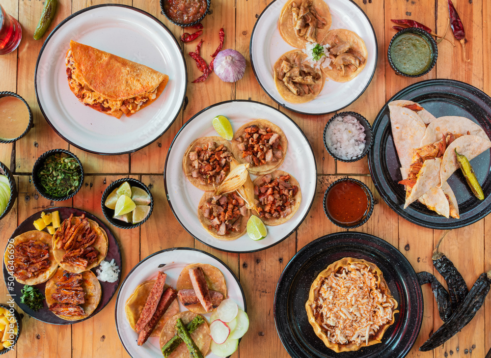
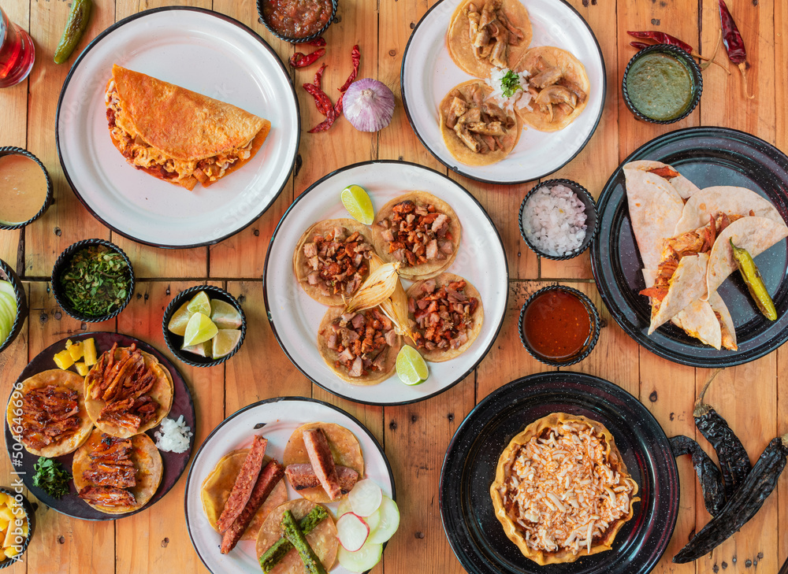

Mi Rincón Gastronómico
Explorando los sabores de la cocina poblana

Explorando los sabores de la cocina poblana

Tradicional mezcla de chiles, chocolate, especias y amor poblano. Se sirve comúnmente con pollo y arroz.
Precio: $180 MXN
Chile poblano relleno de carne con frutas, cubierto con salsa de nuez y granada. Platillo típico del mes patrio.
Precio: $220 MXN
Carne de cerdo marinada al estilo oriental servida en pan pita. Una fusión deliciosa y muy poblana.
Precio: $95 MXN

Tortillas pequeñas fritas con salsa roja y verde, carne deshebrada y cebolla. ¡Un antojito irresistible!
Precio: $75 MXN (orden 5 piezas)
Pan tradicional relleno de milanesa, quesillo, aguacate y chipotle. Orgullo de las calles de Puebla.
Precio: $85 MXN

Refrescante bebida de arroz con canela y un toque de vainilla.
Precio: $35 MXN (vaso)
Infusión de flores de jamaica, ligeramente ácida y endulzada al gusto.
Precio: $30 MXN (vaso)
Bebida de tamarindo con el equilibrio perfecto entre ácido y dulce.
Precio: $30 MXN (vaso)

Encuéntranos en el corazón de Puebla:
Dirección: Av. Juárez 1914, Zona Esmeralda, Puebla, Pue.